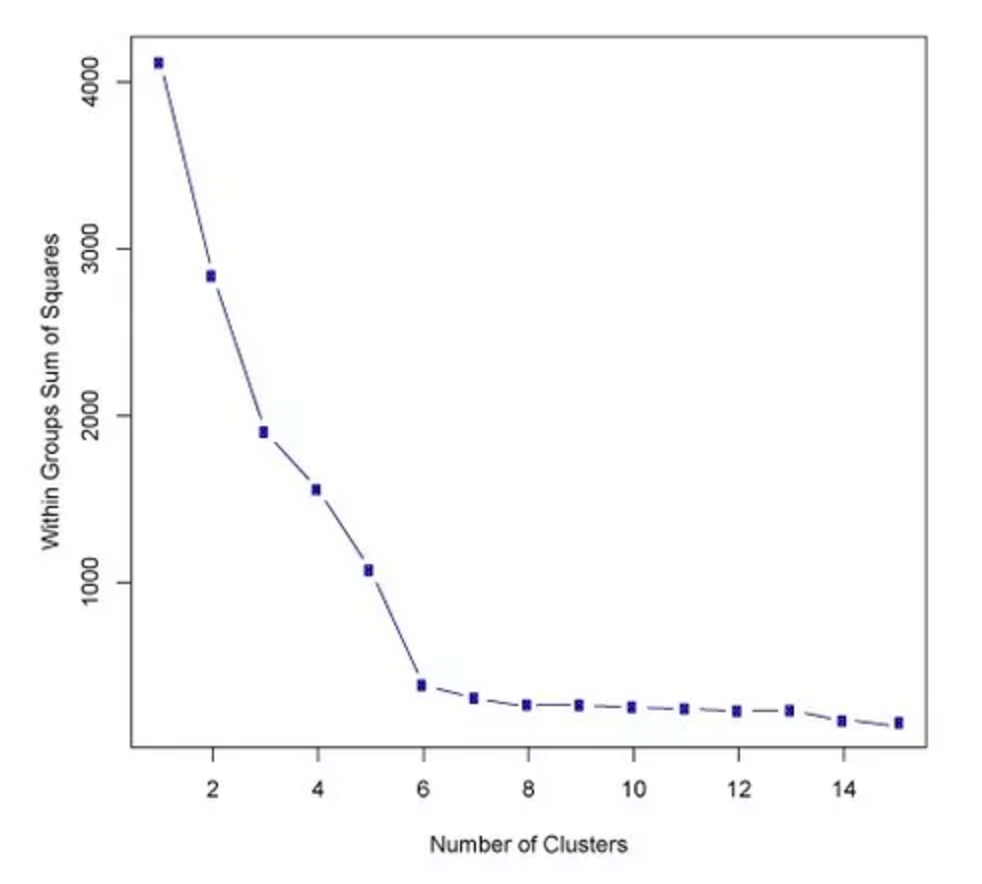

Cluster detection, analysis and visualization
Author: Aaron Brooks / @scalefreegan
You can follow along on 
http://scalefreegan.github.io/Teaching/DataIntegration
Goals: Cluster Analysis
- How to evaluate cluster quality
- Cluster quality metrics
How to choose k?
Naïve approaches
Intuition, Prior Knowledge or Expectation
How many clusters are there?
This approach is common in practice but not recommended!
Data-driven approaches
- Elbow method
- Spectral gap
- Modularity maximization
Elbow method
Intuition: find k where an additional cluster doesn't significantly add to the amount of variance explained
$$ D_k = \sum_{x_i \in C_k} \sum_{x_j \in C_k} ||x_i-x_j||^2 = 2n_k \sum_{x_i \in C_k} ||x_i-\mu_k||^2 $$ $$ W_k = \sum_{k = 1}^{k} \frac{1}{2n_k} D_k$$ $n_k$ is the number of clusters. $\mu_k$ is the mean of each cluster.
Elbow method
Spectral Gap
Relevant for Spectral Clustering
Spectral Gap
If $L$ is approximately block-diagonal, then the eigenvalue spectrum of $L$ will have a gap at the optimal k
Modularity Maximization
Modularity Maximization
Intuition: maximize within-cluster edges and minimize between-cluster edges
$$ Q = \frac{1}{2m} \sum_{ij} A_{ij} - \frac{k_i k_j}{2m} \delta(i, j) $$ $$ \delta(i, j) = \begin{cases} 1 & \text{if i = j} \\ 0 & \text{otherwise} \end{cases} $$
Modularity Maximization

Used in Link-community clustering
Choosing k is tricky
The "best" cutoff often will be elusive